cubLattice_g
Quasi-Monte Carlo method using rank-1 Lattices cubature over a d-dimensional region to integrate within a specified generalized error tolerance with guarantees under Fourier coefficients cone decay assumptions.
Contents
Syntax
[q,out_param] = cubLattice_g(f,hyperbox)
q = cubLattice_g(f,hyperbox,measure,abstol,reltol)
q = cubLattice_g(f,hyperbox,'measure',measure,'abstol',abstol,'reltol',reltol)
q = cubLattice_g(f,hyperbox,in_param)
Description
[q,out_param] = cubLattice_g(f,hyperbox) estimates the integral of f over the d-dimensional region described by hyperbox, and with an error guaranteed not to be greater than a specific generalized error tolerance, tolfun:=max(abstol,reltol*| integral(f) |). Input f is a function handle. f should accept an n x d matrix input, where d is the dimension and n is the number of points being evaluated simultaneously.
When measure is 'uniform', the input hyperbox is a 2 x d matrix, where the first row corresponds to the lower limits and the second row corresponds to the upper limits of the integral. When measure is 'uniform ball' or 'uniform sphere', the input hyperbox is a vector with d+1 elements, where the first d values correspond to the center of the ball and the last value corresponds to the radius of the ball. For these last two measures, a user can optionally specify what transformation should be used in order to get a uniform distribution on a ball. When measure is 'uniform ball_box', the box-to-ball transformation, which gets a set of points uniformly distributed on a ball from a set of points uniformly distributed on a box, will be used. When measure is 'uniform ball_normal', the normal-to-ball transformation, which gets a set of points uniformly distributed on a ball from a set of points normally distributed on the space, will be used. Similarly, the measures 'uniform sphere_box' and 'uniform sphere_normal' can be used to specify the desired transformations. The default transformations are the box-to-ball and the box-to-sphere transformations, depending on the region of integration. Given the construction of our Lattices, d must be a positive integer with 1 <= d <= 600.
q = cubLattice_g(f,hyperbox,measure,abstol,reltol) estimates the integral of f over the hyperbox. The answer is given within the generalized error tolerance tolfun. All parameters should be input in the order specified above. If an input is not specified, the default value is used. Note that if an input is not specified, the remaining tail cannot be specified either. Inputs f and hyperbox are required. The other optional inputs are in the correct order: measure,abstol,reltol,shift,mmin,mmax,fudge, and transform.
q = cubLattice_g(f,hyperbox,'measure',measure,'abstol',abstol,'reltol',reltol) estimates the integral of f over the hyperbox. The answer is given within the generalized error tolerance tolfun. All the field-value pairs are optional and can be supplied in any order. If an input is not specified, the default value is used.
q = cubLattice_g(f,hyperbox,in_param) estimates the integral of f over the hyperbox. The answer is given within the generalized error tolerance tolfun.
Input Arguments
- f --- the integrand whose input should be a matrix n x d where n is the number of data points and d the dimension, which cannot be greater than 600. By default f is f=@ x.^2.
- hyperbox --- the integration region defined by its bounds. When measure is 'uniform' or 'normal', hyperbox must be a 2 x d matrix, where the first row corresponds to the lower limits and the second row corresponds to the upper limits of the integral. When measure is 'uniform ball' or 'uniform sphere', the input hyperbox is a vector with d+1 elements, where the first d values correspond to the center of the ball and the last value corresponds to the radius of the ball. The default value is [0;1].
- in_param.measure --- for f(x)*mu(dx), we can define mu(dx) to be the measure of a uniformly distributed random variable in the hyperbox or normally distributed with covariance matrix I_d. The possible values are 'uniform', 'normal', 'uniform ball', 'uniform ball_box', 'uniform ball_normal', 'uniform sphere', 'uniform sphere_box' and 'uniform sphere_normal'. For 'uniform', the hyperbox must be a finite volume, for 'normal', the hyperbox can only be defined as (-Inf,Inf)^d and, for 'uniform ball' or 'uniform sphere', hyperbox must have finite values for the coordinates of the center and a finite positive value for the radius. By default it is 'uniform'.
- in_param.abstol --- the absolute error tolerance, abstol>=0. By default it is 1e-4. For pure absolute tolerance, set in_param.reltol = 0.
- in_param.reltol --- the relative error tolerance, which should be in [0,1]. Default value is 1e-2. For pure absolute tolerance, set in_param.abstol = 0.
Optional Input Arguments
- in_param.shift --- in_param.shift --- the Rank-1 lattices can be shifted to avoid the origin or other particular points. The shift is a vector in [0,1]^d. By default we consider a shift uniformly sampled from [0,1]^d.
- in_param.mmin --- the minimum number of points to start is 2^mmin. The cone condition on the Fourier coefficients decay requires a minimum number of points to start. The advice is to consider at least mmin=10. mmin needs to be a positive integer with mmin<=mmax. By default it is 10.
- in_param.mmax --- tthe maximum budget is 2^mmax. By construction of our Lattices generator, mmax is a positive integer such that mmin<=mmax. mmax should not be bigger than the gail.lattice_gen allows. The default value is 20.
- in_param.fudge --- the positive function multiplying the finite sum of Fast Fourier coefficients specified in the cone of functions. This input is a function handle. The fudge should accept an array of nonnegative integers being evaluated simultaneously. For more technical information about this parameter, refer to the references. By default it is @(m) 5*2.^-m.
- in_param.transform --- the algorithm is defined for continuous periodic functions. If the input function f is not, there are 5 types of transform to periodize it without modifying the result. By default it is the Baker's transform. The options are:
- id : no transformation.
- Baker : Baker's transform or tent map in each coordinate. Preserving only continuity but simple to compute. Chosen by default.
- C0 : polynomial transformation only preserving continuity.
- C1 : polynomial transformation preserving the first derivative.
- C1sin : Sidi's transform with sine, preserving the first derivative. This is in general a better option than 'C1'.
Output Arguments
- q --- the estimated value of the integral.
- out_param.d --- dimension over which the algorithm integrated.
- out_param.n --- number of Rank-1 lattice points used for computing the integral of f.
- out_param.bound_err --- predicted bound on the error based on the cone condition. If the function lies in the cone, the real error will be smaller than generalized tolerance.
- out_param.time --- time elapsed in seconds when calling cubLattice_g.
- out_param.exitflag --- this is a binary vector stating whether warning flags arise. These flags tell about which conditions make the final result certainly not guaranteed. One flag is considered arisen when its value is 1. The following list explains the flags in the respective vector order:
- 1 : If reached overbudget, meaning the max budget is attained without reaching the guaranteed error tolerance.
- 2 : If the function lies outside the cone, results are not guaranteed to be accurate. Note that this parameter is computed on the transformed function, not the input function. For more information on the transforms, check the input parameter in_param.transform; for information about the cone definition, check the article mentioned below.
Guarantee
This algorithm computes the integral of real valued functions in 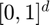 with a prescribed generalized error tolerance. The Fourier coefficients of the integrand are assumed to be absolutely convergent. If the algorithm terminates without warning messages, the output is given with guarantees under the assumption that the integrand lies inside a cone of functions. The guarantee is based on the decay rate of the Fourier coefficients. For integration over domains other than , this cone condition applies to 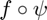 (the composition of the functions) where 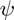 is the transformation function for to the desired region. For more details on how the cone is defined, please refer to the references below.
Examples
Example 1
Estimate the integral with integrand 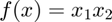 in the interval 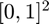:
f = @(x) prod(x,2); hyperbox = [zeros(1,2);ones(1,2)]; q = cubLattice_g(f,hyperbox,'uniform',1e-5,0,'transform','C1sin'); exactsol = 1/4; check = double(abs(exactsol-q) < 1e-5)
check =
1
Example 2
Estimate the integral with integrand 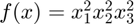 in the interval 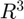 where 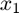, 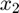 and 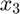 are normally distributed:
f = @(x) x(:,1).^2.*x(:,2).^2.*x(:,3).^2; hyperbox = [-inf(1,3);inf(1,3)]; q = cubLattice_g(f,hyperbox,'normal',1e-3,1e-3,... 'transform','C1sin','shift',2^(-25)*ones(1,3)); exactsol = 1; check = double(abs(exactsol-q) < max(1e-3,1e-3*abs(exactsol)))
check =
1
Example 3
Estimate the integral with integrand 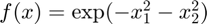 in the interval 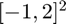:
f = @(x) exp(-x(:,1).^2-x(:,2).^2); hyperbox = [-ones(1,2);2*ones(1,2)]; q = cubLattice_g(f,hyperbox,'uniform',1e-3,1e-2,'transform','C1'); exactsol = 1/9*(sqrt(pi)/2*(erf(2)+erf(1)))^2; check = double(abs(exactsol-q) < max(1e-3,1e-2*abs(exactsol)))
check =
1
Example 4
Estimate the price of an European call with 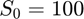, 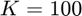, 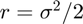, 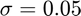, and 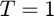.
f = @(x) exp(-0.05^2/2)*max(100*exp(0.05*x)-100,0); hyperbox = [-inf(1,1);inf(1,1)]; q = cubLattice_g(f,hyperbox,'normal',1e-4,1e-2,'transform','C1sin'); price = normcdf(0.05)*100 - 0.5*100*exp(-0.05^2/2); check = double(abs(price-q) < max(1e-4,1e-2*abs(price)))
check =
1
Example 5
Estimate the integral with integrand 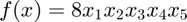 in the interval 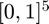 with pure absolute error 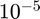.
f = @(x) 8*prod(x,2); hyperbox = [zeros(1,5);ones(1,5)];
q = cubLattice_g(f,hyperbox,'uniform',1e-5,0); exactsol = 1/4;
check = double(abs(exactsol-q) < 1e-5)
check =
1
Example 6
Estimate the integral with integrand 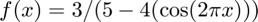 in the interval 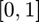 with pure absolute error .
f = @(x) 3./(5-4*(cos(2*pi*x))); hyperbox = [0;1]; q = cubLattice_g(f,hyperbox,'uniform',1e-5,0,'transform','id'); exactsol = 1; check = double(abs(exactsol-q) < 1e-5)
check =
1
Example 7
Estimate the integral with integrand 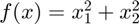 over the disk with center 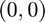 and radius 1 with pure absolute error 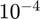, where 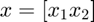 is a vector.
f = @(x) x(:,1).^2+x(:,2).^2; hyperbox = [0,0,1]; q = cubLattice_g(f,hyperbox,'uniform ball','abstol',1e-4,'reltol',0); exactsol = pi/2; check = double(abs(exactsol-q) < 1e-4)
check =
1
See Also
References
[1] Lluis Antoni Jimenez Rugama and Fred J. Hickernell, "Adaptive multidimensional integration based on rank-1 lattices," Monte Carlo and Quasi-Monte Carlo Methods: MCQMC, Leuven, Belgium, April 2014 (R. Cools and D. Nuyens, eds.), Springer Proceedings in Mathematics and Statistics, vol. 163, Springer-Verlag, Berlin, 2016, arXiv:1411.1966, pp. 407-422.
[2] Sou-Cheng T. Choi, Yuhan Ding, Fred J. Hickernell, Lan Jiang, Lluis Antoni Jimenez Rugama, Da Li, Jagadeeswaran Rathinavel, Xin Tong, Kan Zhang, Yizhi Zhang, and Xuan Zhou, GAIL: Guaranteed Automatic Integration Library (Version 2.3.1) [MATLAB Software], 2020. Available from http://gailgithub.github.io/GAIL_Dev/
[3] Sou-Cheng T. Choi, "MINRES-QLP Pack and Reliable Reproducible Research via Supportable Scientific Software," Journal of Open Research Software, Volume 2, Number 1, e22, pp. 1-7, 2014.
[4] Sou-Cheng T. Choi and Fred J. Hickernell, "IIT MATH-573 Reliable Mathematical Software" [Course Slides], Illinois Institute of Technology, Chicago, IL, 2013. Available from http://gailgithub.github.io/GAIL_Dev/
[5] Daniel S. Katz, Sou-Cheng T. Choi, Hilmar Lapp, Ketan Maheshwari, Frank Loffler, Matthew Turk, Marcus D. Hanwell, Nancy Wilkins-Diehr, James Hetherington, James Howison, Shel Swenson, Gabrielle D. Allen, Anne C. Elster, Bruce Berriman, Colin Venters, "Summary of the First Workshop On Sustainable Software for Science: Practice and Experiences (WSSSPE1)," Journal of Open Research Software, Volume 2, Number 1, e6, pp. 1-21, 2014.
[6] Kai-Tai Fang and Yuan Wang, Number-theoretic Methods in Statistics, Chapman & Hall, London, 1994.
If you find GAIL helpful in your work, please support us by citing the above papers, software, and materials.